Zadání a cíl projektu
Scénář zadání je podnikové sdílení souborů, ve kterém je oddělený běh aplikace, běh databáze a výpočetně náročné renderování online kanceláře. Každá vrstva proto běží na vlastním virtuálu:
- VM1, web a aplikace: Nextcloud (Apache + PHP) a reverzní proxy Caddy s HTTPS,
- VM2, backend: MariaDB, Redis pro zamykání souborů a ClamAV pro antivirovou kontrolu,
- VM3, renderování dokumentů: Collabora Online (CODE).
Hlavní složitost zadání je v propojení vrstev:
- Nextcloud na VM1 musí každý nahraný soubor poslat přes VPN na VM2 k antivirové kontrole,
- při otevření tabulky musí uživatele spojit s renderovacím jádrem Collabora na VM3,
- Redis musí zabránit kolizím, když se stejným souborem pracuje víc lidí najednou.
Architektura a prostředí
Všechny služby běží v kontejnerech Dockeru. Ven je vystavená jen VM1 s Caddy na portech 80 a 443. Backend i Collabora poslouchají výhradně na adresách tunelu WireGuard, takže nejsou dostupné ani ze školní sítě.
- Caddy :443 → cloud. a office.nextcloud.test
- Nextcloud 34 (Apache, PHP 8.5)
- cron pro úlohy na pozadí
- MariaDB 11.4 :3306
- Redis 7 :6379
- ClamAV clamd :3310
- Collabora CODE :9980
- bez vlastního TLS
Přidělené virtuály a adresy
| Virtuál | IPv6 (přístup) | IPv4 (endpoint VPN) | Tunel |
|---|---|---|---|
| VM1 (č. 42) | 2001:718:1001:2cf:20c:29ff:fe15:a285 | 192.168.0.204 | 100.64.0.1 |
| VM2 (č. 43) | 2001:718:1001:2cf:20c:29ff:fefc:b0ef | 192.168.0.229 | 100.64.0.2 |
| VM3 (č. 44) | 2001:718:1001:2cf:20c:29ff:fedc:7147 | 192.168.0.230 | 100.64.0.3 |
Použité komponenty
| Součást | Verze | Úloha |
|---|---|---|
| Operační systém | Ubuntu Server 24.04.5 LTS | základ všech tří virtuálů |
| Docker, Compose | Docker CE 29, Compose 5.5 | běh služeb v kontejnerech |
| WireGuard | jádro Linuxu 6.8 | šifrovaná síť mezi virtuály |
| Nextcloud | 34.0.4 (Hub 26 Spring) | aplikace pro sdílení souborů |
| Caddy | 2 | reverzní proxy, automatické certifikáty |
| MariaDB | 11.4.13 | databáze Nextcloudu |
| Redis | 7 | zamykání souborů, cache, PHP session |
| ClamAV | stable | antivirová kontrola nahraných souborů |
| Collabora Online | CODE 26.04.4.2 | renderování a editace dokumentů |
| Aplikace Nextcloudu | files_antivirus 6.4.1, richdocuments 11.1.2 | napojení na ClamAV a Collaboru |
Příprava virtuálů
Na všech třech virtuálech proběhl stejný základ.
-
Aktualizace a základní balíčky
sudo hostnamectl set-hostname VM1 # VM2, VM3 sudo apt update && sudo apt full-upgrade -y sudo apt install -y curl ca-certificates gnupg ufw wireguard tmux sudo timedatectl set-timezone Europe/Prague -
Docker z oficiálního repozitáře
curl -fsSL https://download.docker.com/linux/ubuntu/gpg | \ sudo gpg --dearmor -o /etc/apt/keyrings/docker.gpg echo "deb [arch=$(dpkg --print-architecture) signed-by=/etc/apt/keyrings/docker.gpg] \ https://download.docker.com/linux/ubuntu noble stable" | \ sudo tee /etc/apt/sources.list.d/docker.list sudo apt update sudo apt install -y docker-ce docker-ce-cli containerd.io docker-compose-plugin sudo usermod -aG docker $USERPo instalaci následoval restart kvůli novému jádru a členství ve skupině
docker. -
Firewall
sudo ufw allow 22/tcp sudo ufw allow 51820/udp sudo ufw allow in on wg0 sudo ufw enableNa VM1 navíc přibyly porty
80/tcpa443/tcppro Caddy.
VPN WireGuard mezi virtuály
Virtuály tvoří plnou síť (mesh): každý zná oba ostatní. Pro adresy uvnitř tunelu
jsem zvolil rozsah 100.64.0.0/24. Původně plánovaný rozsah
10.10.0.0/24 by spadal do sítě 10.0.0.0/8, kterou mají
VM1 a VM2 na rozhraní ens224.
Konfigurace na VM1
# /etc/wireguard/wg0.conf
[Interface]
Address = 100.64.0.1/24
ListenPort = 51820
PostUp = wg set %i private-key /etc/wireguard/private.key
[Peer]
# VM2 backend
PublicKey = <veřejný klíč VM2>
Endpoint = 192.168.0.229:51820
AllowedIPs = 100.64.0.2/32
PersistentKeepalive = 25
[Peer]
# VM3 office
PublicKey = <veřejný klíč VM3>
Endpoint = 192.168.0.230:51820
AllowedIPs = 100.64.0.3/32
PersistentKeepalive = 25
Privátní klíč se načítá ze souboru přes PostUp, v konfiguraci tedy
není a dá se bezpečně ukázat. VM2 a VM3 mají obdobnou konfiguraci.
Docker startuje až po tunelu
Kontejnery publikují porty přímo na adresu tunelu (např. 100.64.0.2:3306).
Ta existuje, až když běží WireGuard, proto má Docker na tunelu závislost:
# /etc/systemd/system/docker.service.d/wg.conf
[Unit]
After=wg-quick@wg0.service
Requires=wg-quick@wg0.service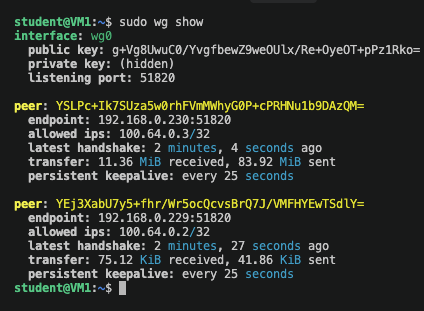
Backend na VM2
MariaDB, Redis a ClamAV běží v jednom compose souboru. Všechny porty jsou publikované
jen na adrese 100.64.0.2. Docker totiž obchází pravidla UFW, takže
navázání na konkrétní adresu je jediná spolehlivá ochrana před přístupem zvenku.
# /opt/backend/docker-compose.yml
services:
mariadb:
image: mariadb:11.4
restart: unless-stopped
command: --transaction-isolation=READ-COMMITTED --log-bin=binlog --binlog-format=ROW
environment:
MARIADB_ROOT_PASSWORD: ${MARIADB_ROOT_PASSWORD}
MARIADB_DATABASE: nextcloud
MARIADB_USER: nextcloud
MARIADB_PASSWORD: ${MARIADB_PASSWORD}
volumes:
- db:/var/lib/mysql
ports:
- "100.64.0.2:3306:3306"
redis:
image: redis:7-alpine
restart: unless-stopped
command: redis-server --requirepass ${REDIS_PASSWORD} --appendonly yes
volumes:
- redis:/data
ports:
- "100.64.0.2:6379:6379"
clamav:
image: clamav/clamav:stable
restart: unless-stopped
volumes:
- clamav:/var/lib/clamav
ports:
- "100.64.0.2:3310:3310"
volumes:
db:
redis:
clamav:
Hesla jsou v souboru .env s právy 600. Parametry MariaDB
(izolace transakcí a binlog ve formátu ROW) doporučuje dokumentace Nextcloudu.
Ověření z VM1 přes tunel
mysql -h 100.64.0.2 -u nextcloud -p -e "SELECT VERSION();" # 11.4.13-MariaDB
redis-cli -h 100.64.0.2 -a '<heslo>' PING # PONG
printf 'nPING\n' | nc -q 2 100.64.0.2 3310 # PONG
# negativní test: mimo tunel se na služby dostat nesmí
nc -zv -w 3 192.168.0.229 3306 # timed out
nc -zv -w 3 192.168.0.229 6379 # timed out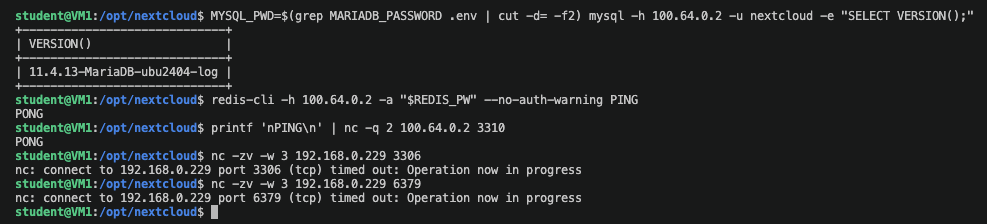
Zátěž backendu
Nejvíc paměti na VM2 spotřebuje ClamAV, který drží celou databázi virových signatur v RAM: zhruba 950 MiB, tedy téměř polovinu paměti virtuálu. MariaDB si vezme kolem 120 MiB a Redis jen 7 MiB. Při dimenzování backendu je proto rozhodující právě antivirus.
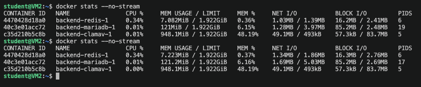
Nextcloud a Caddy na VM1
Certifikát bez veřejné domény
Let's Encrypt vydá certifikát jen pro veřejnou doménu, kterou ověří z internetu.
Virtuály jsou dostupné jen přes školní VPN a nemají DNS záznamy, proto jsem použil
interní certifikační autoritu Caddy (tls internal). Certifikáty vydává
a obnovuje automaticky stejně jako u Let's Encrypt, v produkci by stačilo odebrat
jeden řádek. Jména cloud.nextcloud.test a office.nextcloud.test
jsou definovaná v /etc/hosts na notebooku a kořenový certifikát Caddy
je přidaný mezi důvěryhodné.
-
Compose s Nextcloudem, cronem a Caddy
# /opt/nextcloud/docker-compose.yml (zkráceno) services: nextcloud: image: nextcloud:stable-apache environment: MYSQL_HOST: 100.64.0.2 REDIS_HOST: 100.64.0.2 REDIS_HOST_PASSWORD: ${REDIS_PASSWORD} NEXTCLOUD_TRUSTED_DOMAINS: cloud.nextcloud.test OVERWRITEPROTOCOL: https TRUSTED_PROXIES: 172.20.0.0/24 volumes: [nextcloud:/var/www/html] cron: image: nextcloud:stable-apache entrypoint: /cron.sh caddy: image: caddy:2 ports: ["80:80", "443:443"] networks: web: aliases: [cloud.nextcloud.test, office.nextcloud.test]Nastavení
REDIS_HOSTzapne Redis pro zamykání souborů i cache. Síťové aliasy u Caddy zajistí, že Nextcloud uvnitř Dockeru najde vlastní doménu i doménu Collabory, i když neexistuje DNS. -
Caddyfile
cloud.nextcloud.test { tls internal reverse_proxy nextcloud:80 header Strict-Transport-Security "max-age=15552000;" redir /.well-known/carddav /remote.php/dav/ 301 redir /.well-known/caldav /remote.php/dav/ 301 } office.nextcloud.test { tls internal reverse_proxy 100.64.0.3:9980 } -
Instalace a kontrola
Nextcloud se při prvním startu sám nainstaloval do databáze na VM2.
occ status # installed: true, version 34.0.4.1 occ config:system:get memcache.locking # \OC\Memcache\Redis occ config:system:get dbhost # 100.64.0.2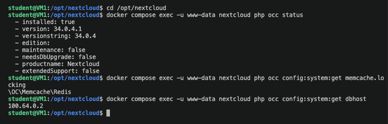
Nextcloud nainstalovaný, Redis a databáze na VM2 -
Důvěra Nextcloudu v certifikát Caddy
Nextcloud ověřuje své nastavení i spojení s Collaborou požadavky na vlastní HTTPS adresy. Proto dostal kořenový certifikát Caddy:
occ security:certificates:import /tmp/caddy-root.crt occ maintenance:repair --include-expensivePo opravách zmizela všechna varování k nastavení. Zůstala jen informační upozornění a počet chyb v záznamu událostí, které vznikly během testů výpadků (nedostupná databáze, antivirus a Collabora).
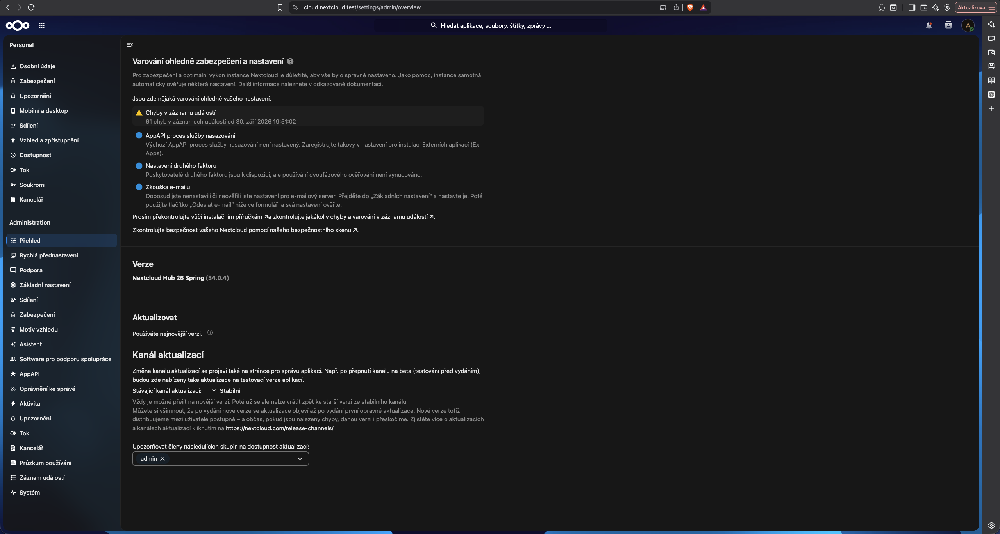
Administrace → Přehled
Antivirová kontrola přes VPN
Aplikace files_antivirus běží v režimu démona: každý nahraný soubor posílá streamem na ClamAV na VM2. Pokud ClamAV najde virus, Nextcloud soubor odmítne.
- Prohlížeč nahrání souboru
- HTTPS na Caddy
- Nextcloud na VM1 aplikace files_antivirus
- WireGuard, TCP 3310, příkaz INSTREAM
- ClamAV na VM2 vrátí OK nebo název nalezeného viru
occ app:install files_antivirus
occ config:app:set files_antivirus av_mode --value=daemon
occ config:app:set files_antivirus av_host --value=100.64.0.2
occ config:app:set files_antivirus av_port --value=3310
occ config:app:set files_antivirus av_infected_action --value=deleteTest souborem EICAR
EICAR je standardní neškodný testovací řetězec, který všechny antiviry hlásí jako virus. Jeho nahrání Nextcloud odmítl, běžný soubor prošel. V logu ClamAV na VM2 je vidět, že kontrola přišla z adresy VM1 v tunelu:
instream(100.64.0.1@43060): Eicar-Signature FOUND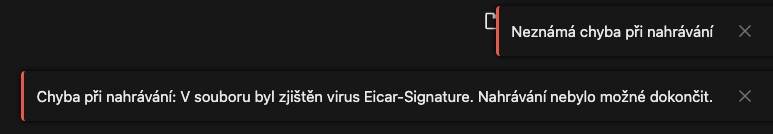
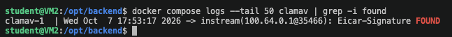
Collabora Online na VM3
Collabora poslouchá jen na 100.64.0.3:9980. Prohlížeč se k ní dostane
přes Caddy na VM1 jako https://office.nextcloud.test. Collabora naopak
přes tunel volá Nextcloud (protokol WOPI), aby si dokument stáhla a uložila.
# /opt/collabora/docker-compose.yml
services:
collabora:
image: collabora/code:latest
restart: unless-stopped
cap_add:
- MKNOD
environment:
- aliasgroup1=https://cloud\.nextcloud\.test:443
- dictionaries=cs_CZ en_US
- extra_params=--o:ssl.enable=false --o:ssl.termination=true --o:ssl.ssl_verification=false
extra_hosts:
- "cloud.nextcloud.test:100.64.0.1"
ports:
- "100.64.0.3:9980:9980"| Volba | Význam |
|---|---|
aliasgroup1 | dokumenty smí otevírat jen náš Nextcloud |
ssl.enable=false, ssl.termination=true | TLS řeší Caddy, uvnitř tunelu běží čisté HTTP |
ssl.ssl_verification=false | certifikát Nextcloudu je od interní CA; s Let's Encrypt by volba odpadla |
extra_hosts | doména Nextcloudu ukazuje přes tunel na VM1 |
Propojení s Nextcloudem
occ app:install richdocuments
occ config:app:set richdocuments wopi_url --value=https://office.nextcloud.test
occ config:app:set richdocuments public_wopi_url --value=https://office.nextcloud.test
occ config:app:set richdocuments wopi_allowlist --value=100.64.0.0/24,172.20.0.0/24
occ richdocuments:activate-config
Poslední příkaz ověřil celou cestu a detekoval
Collabora Online Development Edition 26.04.4.2.
wopi_allowlist omezuje, odkud smí přicházet požadavky WOPI: jen z tunelu
a z Docker sítě na VM1.
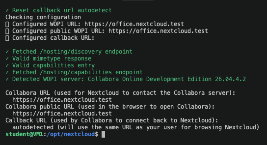
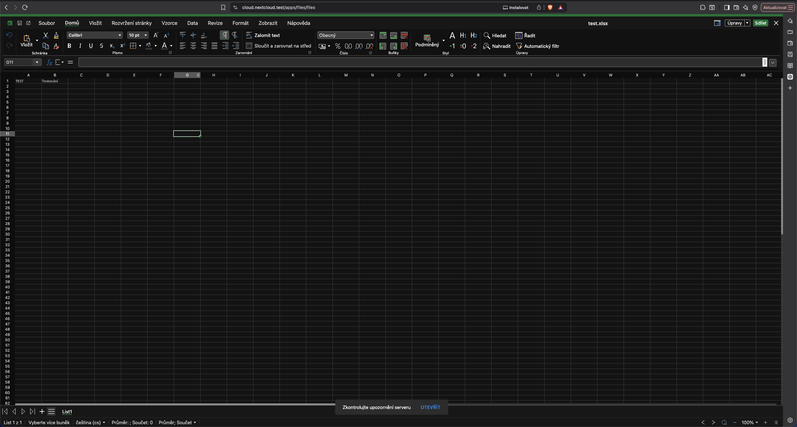
Zátěž na VM3
Měření docker stats na VM3 ukazuje, že renderování opravdu běží tam:
| Stav | CPU | Paměť | Procesy |
|---|---|---|---|
| Bez otevřeného dokumentu | 0,19 % | 345 MiB | 17 |
| Otevřená tabulka, editace dvou uživatelů | 3,58 % | 380 MiB | 20 |
Pro otevřený dokument Collabora spustila nové procesy a vzrostla jí paměť. VM1 mezitím jen předává provoz.
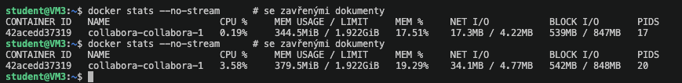
Testy
Souběžná editace
Tabulku test.xlsx jsem sdílel druhému uživateli a otevřel ji ve dvou
oknech prohlížeče najednou. V editoru admina je vidět kurzor se jmenovkou
Uživatel 2 a v záhlaví avatary obou uživatelů. Změny se v obou oknech
objevují v reálném čase.
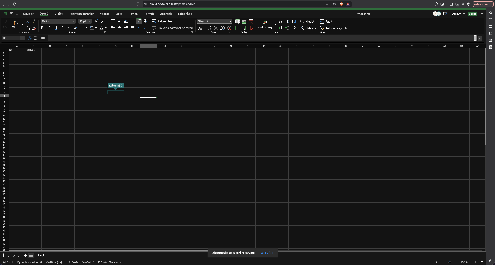
Zamykání souborů v Redisu
Během dvou souběžných nahrávání téhož souboru přes WebDAV jsem na VM1 sledoval
příkazy, které dostává Redis na VM2 (redis-cli monitor):
| Příkaz v Redisu | Význam |
|---|---|
…/lockfiles/<hash> | klíč zámku konkrétního souboru |
INCRBY … 1 | sdílený zámek pro čtení, může jich být víc |
SET … nx, "exclusive" | exkluzivní zámek pro zápis, uspěje jen první |
EXPIRE … 3600 | pojistka, zámek po hodině sám vyprší |
Požadavky přicházely ze dvou spojení z adresy 100.64.0.1, tedy z VM1
přes tunel, a oba sahaly na stejné klíče. Výpis ukazuje celý životní cyklus zámku:
nejdřív sdílený zámek (INCRBY), pak jeho povýšení na exkluzivní
(SET … nx) a po dokončení zápisu uvolnění (DECRBY,
del). Druhé spojení získalo exkluzivní zámek na stejný soubor až po
uvolnění prvního, zápisy se tedy seřadily za sebe. Kdyby se potkaly ve stejném
okamžiku, druhý by dostal odpověď 423 Locked místo toho, aby přepsal
rozepsaný soubor.
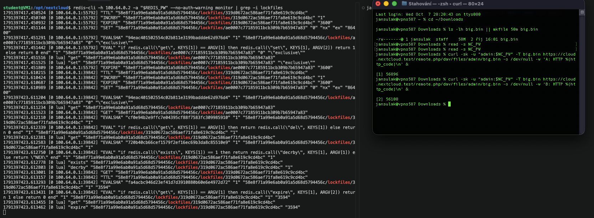
Výpadky jednotlivých vrstev
| Test | Soubory | Editace dokumentů |
|---|---|---|
| Zastavená Collabora na VM3 | fungují | nedostupná |
| Zastavený ClamAV na VM2 | nahrávání odmítnuto | funguje |
| Zastavený tunel a backend na VM2 | nedostupné | nedostupná |
| Přerušený spoj VM1 ↔ VM2 | nedostupné | nedostupná |
Výpadek renderovací VM nezastaví sdílení souborů, zatímco backend je pro celý systém kritický. Při nedostupném antiviru Nextcloud nahrávání odmítl s hlášením No connection to anti virus. To je bezpečné chování: soubor, který nebylo možné zkontrolovat, se do cloudu nedostane. Po obnovení služeb se Nextcloud vzpamatoval sám, bez zásahu.
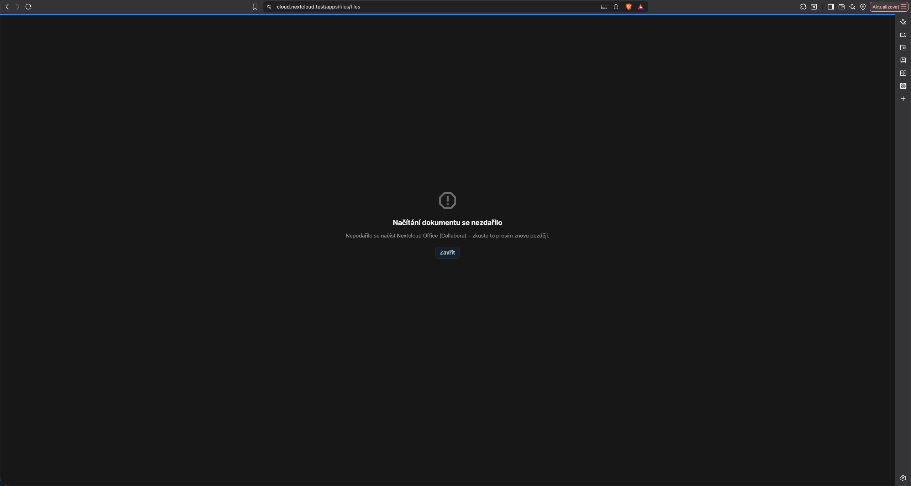
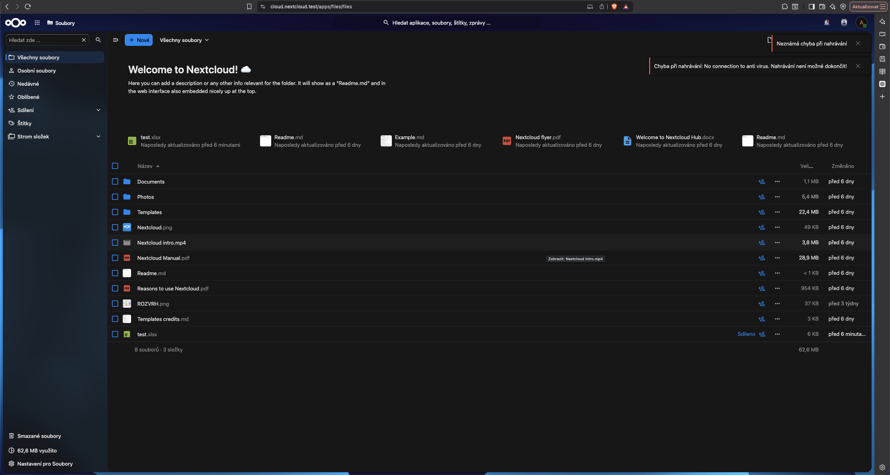
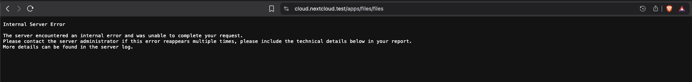
Čistý výpadek síťového spoje
Při zastavení tunelu na VM2 se kvůli závislosti zastaví i Docker, výpadek sítě a služeb tak splyne. Proto jsem udělal i test, kde se přeruší jen spoj VM1 ↔ VM2 a služby na VM2 běží dál. Průběh ukazuje souběžně běžící ping:
ping -O 100.64.0.2 # v jednom panelu tmuxu
sudo wg set wg0 peer <klíč VM2> remove # přerušení spoje
sudo wg set wg0 peer <klíč VM2> \ # obnovení bez restartu
endpoint 192.168.0.229:51820 allowed-ips 100.64.0.2/32 persistent-keepalive 25
Peer se vrací přímo příkazem wg set, takže se nerestartuje rozhraní
ani Docker s Nextcloudem.
Během výpadku hlásí ping Required key not available: WireGuard pro cílovou
adresu nezná žádný peer, a paket proto vůbec neodešle. Po vrácení peeru odpovědi
naskočily hned v další sekundě, ztraceno bylo 15 paketů, tedy zhruba 15 sekund výpadku.
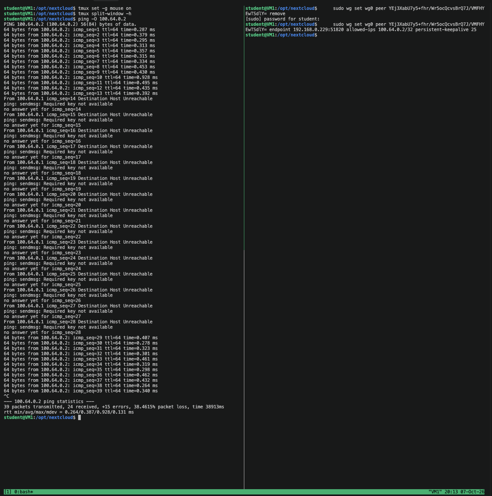
Problémy a jejich řešení
| Problém | Příčina | Řešení |
|---|---|---|
| Docker se nenainstaloval, chyba 404 | na Ubuntu byl přidaný repozitář pro Debian | repozitář linux/ubuntu pro vydání noble |
| Tunel z VM1 nenavázal spojení | překlep ve veřejném klíči; tcpdump ukázal jen úvodní zprávy handshaku (148 B), žádnou odpověď (92 B) | klíče kopírované jako text a ověřené otiskem md5sum |
| Po chybě v konfiguraci tunelu přestal běžet Nextcloud | závislost Dockeru na WireGuardu zastavila kontejnery | oprava konfigurace a systemctl start docker |
| Varování HSTS v administraci, i když hlavička existovala | Nextcloud ověřuje sám sebe zevnitř kontejneru, kde doména neexistovala a CA Caddy nebyla důvěryhodná | síťové aliasy u Caddy a import kořenového certifikátu |
| Import certifikátu „could not get parsed“ | soubor s právy 600 nemohl číst uživatel www-data |
chmod 644 a změna vlastníka v kontejneru |
| Po testu výpadku se VM1 nespojila s ostatními, Nextcloud hlásil timeout databáze | wg syncconf smazal z rozhraní privátní klíč, který v souboru není |
wg set wg0 private-key /etc/wireguard/private.key |
| Collabora na nepřiděleném virtuálu | omylem použitý jiný stroj místo VM č. 44 | nová instalace na správné VM a výměna peeru na VM1 a VM2 příkazem sed |
Možná rozšíření
- veřejná doména a certifikát Let's Encrypt místo interní CA,
- pravidelné zálohy databáze a dat Nextcloudu, například přes
mariadb-dumpa systemd timer, - SMTP server pro e-mailová upozornění a obnovu hesla,
- vynucení dvoufázového ověření pro všechny uživatele,
- monitoring všech tří virtuálů Zabbixem,
- víc instancí Collabory za vyvažovačem zátěže pro větší počet uživatelů.
Závěr
Na třech přidělených virtuálech běží funkční osobní cloud. Nextcloud na VM1 je dostupný přes HTTPS za proxy Caddy, databáze, zamykání souborů a antivirus běží na VM2 a náročné renderování dokumentů obstarává Collabora na VM3. Všechny vnitřní služby jsou dostupné jen v tunelu WireGuard.
Testy potvrdily všechny body zadání: infikovaný soubor zachytil ClamAV na VM2, tabulku editovali dva uživatelé současně v Collaboře na VM3, Redis hlídal zámky souborů a výpadek renderovací vrstvy neohrozil sdílení souborů.
Projekt mi ukázal, jak závisí jednotlivé vrstvy na síti mezi nimi, proč je důležité navazovat služby jen na vnitřní adresy a jak ladit šifrovaný tunel, když na první pohled „nic nefunguje“.